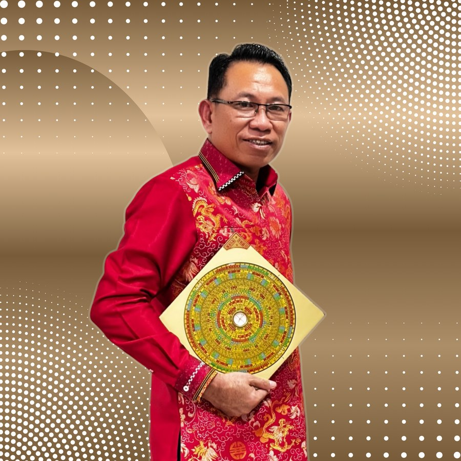

Li Jan Fa — praktisi Feng Shui, BaZi, dan Ze Ri terpercaya. Melayani klien di Malang dan seluruh Indonesia secara langsung maupun online.
Kualitas hidup yang sesungguhnya bukan hanya soal karir dan finansial — keharmonisan keluarga, kesehatan yang terjaga, dan ketenangan batin sama pentingnya. Dan semua itu sangat dipengaruhi oleh kualitas lingkungan tempat kita tinggal. Li Jan Fa, ahli feng shui yang menjangkau klien di Malang dan seluruh wilayah Provinsi Jawa Timur, membantu Anda menciptakan rumah yang bukan sekadar tempat berteduh — melainkan sumber energi positif yang secara aktif mendukung kesehatan, keharmonisan, dan kebahagian seluruh anggota keluarga Anda setiap harinya.
Li Jan Fa melayani berbagai kebutuhan klien di Malang secara menyeluruh. Berikut layanan yang tersedia untuk Anda:
Ada ruangan yang terasa tidak nyaman? Anggota keluarga sering sakit tanpa sebab jelas? Konsultasi feng shui hunian Li Jan Fa dimulai dengan analisis menyeluruh terhadap arah, tata letak, dan elemen properti Anda — diakhiri dengan daftar rekomendasi konkret yang bisa langsung Anda terapkan untuk mengubah energi rumah secara signifikan.
Bisnis lesu meski produk bagus dan lokasi strategis? Mungkin ada hambatan energi di tempat usaha Anda. Li Jan Fa menganalisis feng shui properti bisnis secara holistik: dari orientasi bangunan dan pintu masuk, hingga aliran sirkulasi pelanggan dan zona rezeki di denah ruangan — menghasilkan rekomendasi praktis yang membuka aliran energi positif bisnis Anda.
Merasa terus berjuang keras namun hasilnya tidak sebanding? Mungkin Anda belum memanfaatkan timing dan strategi yang cocok dengan peta nasib Anda sendiri. Analisis BaZi Li Jan Fa menjelaskan peta diri Anda dalam bahasa yang mudah dipahami, lengkap dengan implikasi konkret untuk karir, bisnis, dan kehidupan personal Anda ke depan.
Mengapa bisnis yang dibuka di waktu tertentu lebih berkah dibanding yang lain? Ze Ri menjawab pertanyaan ini. Li Jan Fa menghitung dan merekomendasikan hari, tanggal, dan jam paling menguntungkan untuk momen penting Anda — berdasarkan kombinasi kondisi energi kosmik dan profil BaZi pribadi Anda secara spesifik.
Jarak bukan lagi hambatan untuk mendapatkan konsultasi feng shui berkualitas. Kirimkan foto, denah, dan informasi properti via WhatsApp — terima laporan analisis lengkap beserta daftar rekomendasi yang bisa langsung diterapkan, tanpa perlu keluar dari kota Anda. Sama komprehensif, sama berdampaknya dengan konsultasi tatap muka.
Terkadang bukan soal renovasi besar — perubahan kecil yang tepat sasaran bisa mengubah energi sebuah ruangan secara signifikan. Li Jan Fa memberikan panduan jelas tentang warna, pencahayaan, penempatan furnitur, cermin, dan dekorasi dari perspektif feng shui — sehingga Anda tahu persis perubahan apa yang paling berdampak untuk properti Anda.
Reputasi Li Jan Fa dibangun satu klien dalam satu waktu, selama lebih dari dua dekade. Tidak melalui iklan besar-besaran atau klaim berlebihan — melainkan melalui hasil nyata yang dirasakan oleh klien, yang kemudian menceritakannya kepada keluarga, kolega, dan teman-teman mereka di kota-kota seperti Malang dan di seluruh Provinsi Jawa Timur.
Kepercayaan itu dibangun di atas tiga fondasi: keahlian teknis yang mendalam dalam Feng Shui klasik, BaZi, dan Ze Ri; kejujuran dan transparansi dalam setiap sesi; serta komitmen untuk memberikan rekomendasi yang benar-benar berdampak, bukan yang sekadar membuat klien merasa senang. Prinsip inilah yang menjadi standar tidak tergoyahkan dalam setiap konsultasi Li Jan Fa.
Temukan lebih banyak tentang Li Jan Fa dan jadwalkan konsultasi Anda di fengshuihoki.id.

Di Malang dan seluruh Indonesia, Li Jan Fa dikenal bukan hanya karena keahliannya — tetapi karena konsistensi dan integritas dalam setiap sesinya:
Li Jan Fa adalah praktisi feng shui dengan pengalaman bertahun-tahun yang telah menangani ratusan kasus konsultasi feng shui untuk hunian maupun bisnis di seluruh Indonesia.
Menguasai tiga sistem metafisika Tiongkok secara terintegrasi: Feng Shui klasik, BaZi (Four Pillars), dan Ze Ri (Date Selection) — memberikan panduan yang lebih komprehensif dan holistik.
Melayani klien dari Sabang hingga Merauke. Tersedia dalam format tatap muka (site visit) maupun konsultasi online yang efektif melalui WhatsApp dan platform digital.
Setiap konsultasi menghasilkan rekomendasi yang jelas, praktis, dan langsung dapat diterapkan. Li Jan Fa berkomitmen memberikan solusi nyata, bukan sekadar teori atau ritual simbolis.
Setiap sesi konsultasi dijaga kerahasiaannya. Li Jan Fa membangun hubungan kepercayaan jangka panjang dengan setiap klien, dengan reputasi yang terbukti melalui testimoni nyata.
Menggabungkan kearifan feng shui klasik Tiongkok dengan pemahaman modern tentang psikologi ruang dan desain lingkungan untuk hasil yang relevan dan aplikatif di era kini.
Warga Malang dan Provinsi Jawa Timur kini dapat dengan mudah mengakses layanan konsultasi feng shui profesional dari Li Jan Fa. Jadwalkan kunjungan langsung atau mulai konsultasi online hari ini melalui WhatsApp.
Kota lain di Jawa Timur yang juga dilayani:
Batu Blitar Kediri Madiun
Tidak ada di daftar? Li Jan Fa tetap melayani seluruh Indonesia melalui konsultasi online via WhatsApp. Kunjungi fengshuihoki.id untuk informasi lebih lanjut.
Properti Anda di Malang menyimpan potensi energi yang mungkin belum sepenuhnya terwujud. Li Jan Fa siap membantu Anda mengungkap dan mengoptimalkan potensi itu melalui analisis feng shui yang mendalam dan personal.
📞 Telepon/WA: 0812-8027-0667 | 🌐 fengshuihoki.id
Website Resmi Li Jan Fa → https://www.fengshuihoki.id/Halaman ini dikelola untuk memudahkan pencarian Konsultan Feng Shui di Malang. Informasi lengkap tersedia di website resmi fengshuihoki.id.